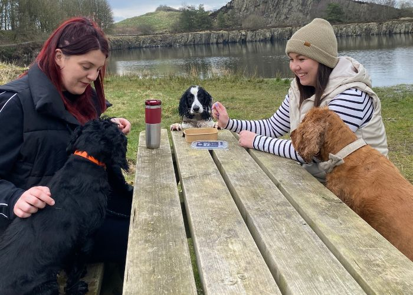
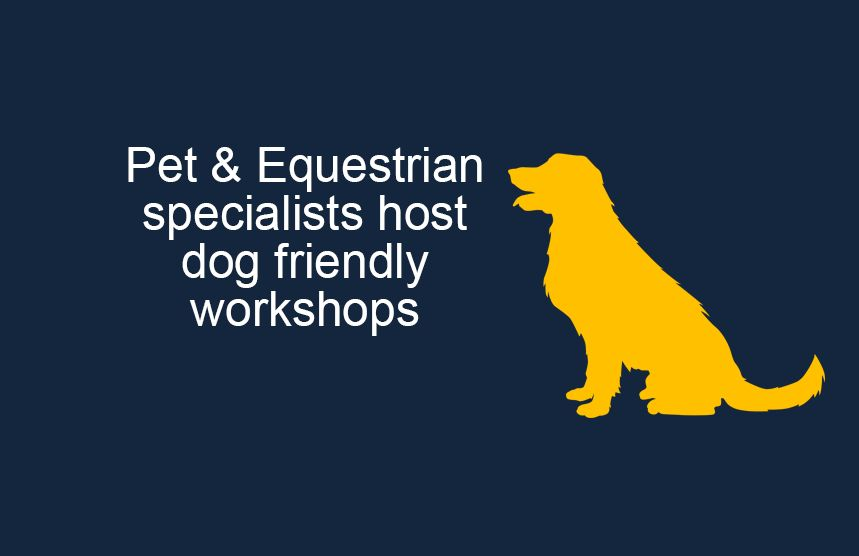

Pet lunch box collaboration between WCF Pet & Equestrian and our 5-star campsites
May-24 saw some great collaboration between our retail and leisure businesses with the launch of a new range of lunch-box sized dog food aimed at making days out with pets easier. The handy bowls of kibble, which are designed to fit into a rucksack or bag, have proved a hit with pet owners staying at WCF’s three five-star camping and glamping sites.

Dog owners staying at Longnor Wood in the Peak District, Herding Hill Farm in Northumberland, and Drummohr, near Edinburgh, have been delighted to stock up on the perfectly portioned pet food so they can enjoy days out with their pets.
Almost 5,000 dogs stayed at WCF’s three camping and glamping venues in the last 12 months. The new lunch-box size dog food range is on sale from reception exclusively at all three sites.
Jo Ritzema, Managing Director of WCF, said: “We really want to make sure that our sites offer the best possible experience for our guests and their pets. Introducing a range of lunch-box sized dry dog food was a natural addition to the services we already provide such as dog-friendly accommodation, doggy welcome packs, scenic dog walks on site, dog exercise areas and dog washing facilities. They are already proving really popular with guests who like the convenience of having a transportable, ready-made meal available for their pets. Many of the site teams use them for their own dogs and so are able to provide personal recommendations.”
One guest staying at Herding Hill Farm site said: “We took our dogs for a walk near Newcastle on Saturday and had a lunch box for our dogs with us and it was great for them to be able to have their meal after a long trek. The boxes are just the right size and ideal to put in your backpack.”
Available in three different ranges, the 100g kibble portions are part of WCF Pet & Equestrian’s own brand range of premium dry dog food, the Lakes Collection. The specialist pet retailer is part of the WCF family of companies operating across the UK in the leisure, retail and logistics sectors.
Jo said: “It made sense for us to bring together our specialisms in pet food and leisure to create a really great product for guests staying at our camping and glamping sites. We’re absolutely delighted with the response from visitors who seem to appreciate the fact that we go the extra mile for our canine visitors as well as their owners. All three sites received a “Top Votes” award in the most recent awards operated by Dog Friendly Magazine, with Drummohr taking the overall nationwide Bronze award."
Press Links
- Special lunch boxes for dogs go down a treat at pet-friendly campsites
- Special lunch boxes for dogs go down a treat at pet-friendly campsites
- Special lunch boxes for dogs go down a treat at pet-friendly campsites
- Portable dog food at Northumberland campsite proves popular
< Previous Article
Pet & Equestrian specialists host dog friendly workshops
